FIAP · Global Solution 2026.2 · CitizenTech · Engenharia de Software 4ES
Secure DevOps Tools & Cloud Computing · Prof. Gabriel Henrique Boyczuk Arcanjo
| Integrante (nome completo) | RM |
|---|---|
| Pedro Henrique Pedrosa Tavares | RM97877 |
| Link | Endereço |
|---|---|
| MVP publicado (URL pública) | https://contaclara-gs.azurewebsites.net |
| Repositório público | https://github.com/ph-tavares/conta-clara |
| Pipeline (GitHub Actions) | https://github.com/ph-tavares/conta-clara/actions |
| Nome do produto | Conta Clara |
|---|---|
| Cidadão e território | Famílias de baixa renda, idosos que moram sozinhos e quem já teve corte ou conta muito acima do esperado. Piloto em bairros da zona sul de São Paulo (SP) atendidos pela mesma distribuidora, com apoio de CRAS e associações de moradores. |
| Problema, em uma frase | A família não entende a própria conta de luz, só percebe o problema quando a fatura chega alta e não sabe contestar uma leitura estimada ou errada. |
| Proposta de valor | A família acompanha o consumo pelas leituras do medidor, sabe quanto a conta deve dar e recebe a contestação pronta quando a cobrança não bate. A organização parceira vê um painel agregado, sem dado pessoal. |
| Arquitetura: componentes | Página web (HTML/JS sem biblioteca externa) e API FastAPI num container, publicado no Azure App Service (Linux, plano F1) criado por Terraform. Banco SQLite no armazenamento persistente do App Service. CI/CD com GitHub Actions e deploy por OIDC. Prometheus, Grafana e Alertmanager. |
| Fontes de dados | Leituras do medidor enviadas pelo próprio MVP. Tarifa residencial e adicional de bandeira tarifária como valores de referência configuráveis (no produto completo, dados abertos da ANEEL, componente de Big Data). A casa de demonstração tem leituras sintéticas, identificadas na tela. |
| Modelos de IA utilizados | Leitura do display do medidor por foto (YOLO customizado, Applied Computer Vision) e contestação por LLM com RAG nas normas da ANEEL (Generative AI). Ficam fora desta entrega: aqui o número é digitado e a contestação vem de um modelo de texto fixo. |
| URL do MVP e repositório | Ver tabela de links acima. |
| Indicadores de impacto | Casas ativas, leituras por mês, conferências feitas e divergentes, contestações aceitas pela distribuidora e valor devolvido por família. |
| ODS conectados | ODS 7 (energia acessível), ODS 10 (redução das desigualdades), ODS 11 (moradia digna) e ODS 13 (clima). |
Fluxo: cada git push passa por 5 portões (testes, Gitleaks, Semgrep, Trivy IaC e Trivy imagem). Só a imagem aprovada na main é publicada no GHCR (tags :sha e :latest). O job deploy faz login na Azure por OIDC, com um token de curta duração e sem senha guardada. Em seguida, aponta o App Service para a imagem :sha do commit e só passa quando /health responde com esse SHA.
Por que PaaS (App Service) e não VM: a assinatura usada é a Azure para Estudantes Starter. Ela só permite os provedores Microsoft.Web, Microsoft.Sql e alguns de gestão; VM, rede virtual e Storage Account são negados pela própria assinatura (DisallowedProvider). O plano F1 do App Service é gratuito, roda o mesmo container do docker compose local e entrega HTTPS e patches do host pela plataforma. Em troca: 60 min de CPU por dia, sem Always On e uma instância só (seção 10).
| Requisito | Como foi atendido | Arquivo |
|---|---|---|
| Enxuto | Multi-stage: o pip roda no estágio de build e só os pacotes instalados vão para a imagem python:3.12-slim. O banco usa o sqlite3 da biblioteca padrão. A página não usa biblioteca externa. .dockerignore exclui testes e cache. | app/Dockerfile |
| Usuário não-root | USER 10001. No compose: read_only, cap_drop: ALL, no-new-privileges e mem_limit 256m. O único ponto gravável é o volume do banco. | docker-compose.yml |
| Sem segredo na imagem | Os segredos só entram por variável de ambiente em runtime: .env local e app settings na Azure. O Trivy roda com --scanners secret na imagem a cada push. | workflow |
| Patches do SO na imagem | apt-get upgrade no estágio final, para não herdar CVE já corrigida da imagem base. | app/Dockerfile |
| Stack com docker compose | api (com o volume dados) e proxy (Caddy, HTTPS automático quando há domínio). O override local acrescenta o build. Em produção, a mesma imagem roda no App Service. | docker-compose.yml |
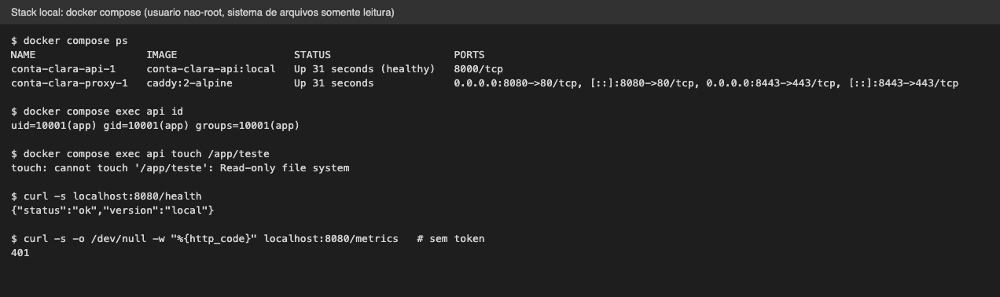
docker compose ps com a stack no ar, docker compose exec api id mostrando uid 10001 (não-root) e a tentativa de gravar em /app falhando (sistema de arquivos somente leitura).| Requisito | Como foi atendido |
|---|---|
| Nuvem criada por código | infra/terraform/main.tf cria: resource group, plano App Service Linux F1 e web app de container (GHCR). Também cria a identidade de deploy no Entra ID (aplicação, service principal e credencial federada OIDC) e a atribuição de papel com menor privilégio. |
| State fora do repositório | Bloco cloud {}: o state fica no HCP Terraform, criptografado e versionado. A organização e o workspace vêm de variáveis de ambiente. O *.tfstate e o *.tfvars estão no .gitignore; o repositório só tem o terraform.tfvars.example. |
| Porta admin nunca 0.0.0.0/0 | No PaaS, a porta administrativa é o site SCM/Kudu (console, logs e deploy). A regra scm_ip_restriction aceita só o var.admin_cidr, e a ação padrão do SCM é Deny. A validation só aceita prefixos de /24 a /32, então 0.0.0.0/0 é recusado no plan. Não há SSH, e FTP e publicação por senha estão desligados. |
| Sem senha digitada | Token de admin e token de métricas vêm de random_password. O deploy usa OIDC: o GitHub não guarda senha nem chave da Azure, só IDs. |
$ terraform test run "bloqueia_admin_aberto_para_a_internet"... pass run "bloqueia_faixa_larga_no_admin"... pass run "infra_segura_com_ip_do_admin"... pass Success! 3 passed, 0 failed.
O terceiro teste confere, com providers simulados: o SCM só aceita o IP do admin e nega o resto; o site exige HTTPS com TLS 1.2+ e não tem FTP; a publicação por senha está desligada; o OIDC só aceita o environment producao deste repositório; e o papel de deploy vale só para este web app.
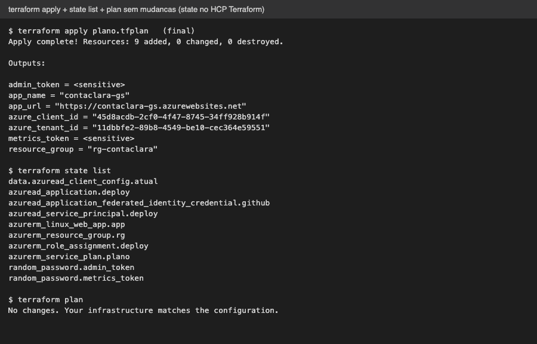
terraform apply concluído, com os outputs (tokens como <sensitive>), os recursos no state remoto e um plan sem mudanças: a nuvem igual ao código.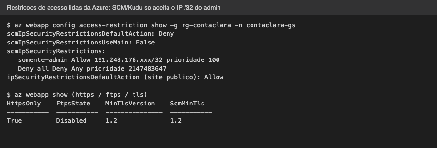
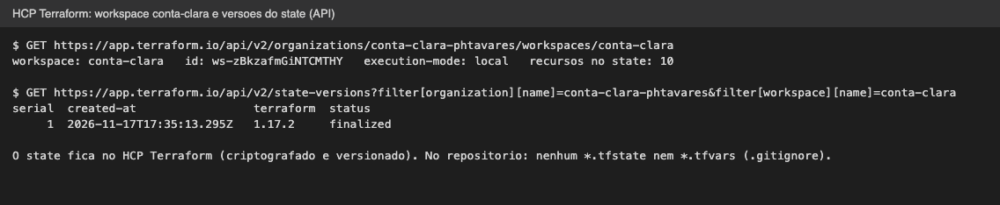
conta-clara no HCP Terraform com o state e o histórico de versões (fora do Git).PREENCHER: tabela Problema / Causa / Solução com o que realmente aconteceu durante o provisionamento e o deploy (ou uma frase dizendo que o provisionamento ocorreu sem incidentes).
Arquivo: .github/workflows/devsecops.yml. Roda em todo push, em qualquer branch.
| Job | Ferramenta | Bloqueia quando |
|---|---|---|
| Build e testes | pytest (API completa sobre SQLite temporário) | qualquer teste falha (fluxo da família, validação do medidor, isolamento entre casas, 401 sem token, hash do código, LGPD) |
| Gitleaks | Gitleaks 8.28 (histórico completo) | algum segredo aparece em qualquer commit |
| Semgrep | p/default, p/python, p/dockerfile, p/secrets | algum achado aparece (--error) |
| Terraform + Trivy IaC | fmt, validate, test + trivy config | formatação, validação, teste de segurança ou misconfiguração HIGH/CRITICAL |
| Imagem + Trivy | trivy image --scanners vuln,secret | há CVE HIGH/CRITICAL com correção ou segredo na imagem |
| Deploy automático | azure/login (OIDC) + az webapp config container set, environment producao | o SHA não entra no ar em 10 min, ou /metrics responde sem token |
Segredos no GitHub Secrets: AZURE_CLIENT_ID, AZURE_TENANT_ID e AZURE_SUBSCRIPTION_ID (só identificadores; quem autentica é o token OIDC de curta duração) e METRICS_TOKEN (smoke test autenticado). O push para o GHCR usa o GITHUB_TOKEN efêmero, com packages: write só no job de imagem. O id-token: write existe só no job de deploy, e o padrão do workflow é contents: read.
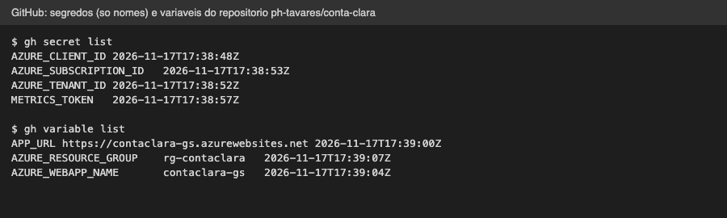
gh CLI. Os valores nunca são exibidos, só nomes e datas.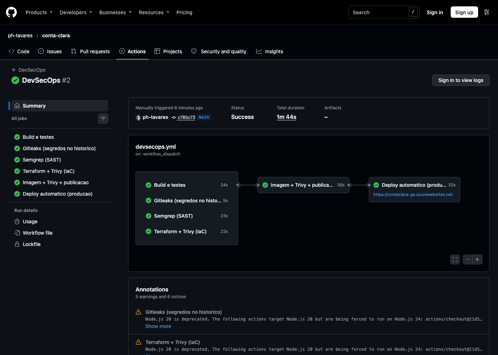
main com todos os jobs verdes, incluindo o deploy.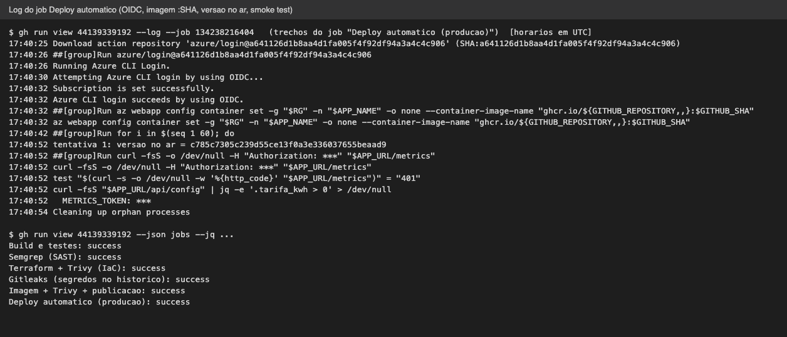
:SHA, o /health confirma a versão no ar e o smoke test usa o token mascarado (***).Numa branch descartável foi commitado um segredo falso (DATABASE_PASSWORD = "...", gerado na hora), e o Gitleaks barrou o pipeline (PREENCHER: link da execução barrada). Sem esse portão aprovado, a imagem não foi construída nem publicada. A correção foi remover o segredo do histórico com git reset + push --force, e não só apagar o arquivo, porque o Gitleaks varre todos os commits (PREENCHER: link da execução corrigida). Num caso real, o segredo também seria rotacionado.
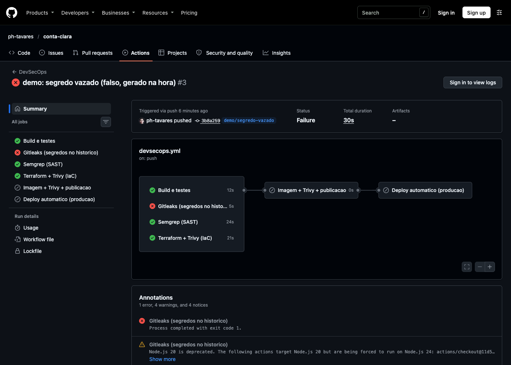
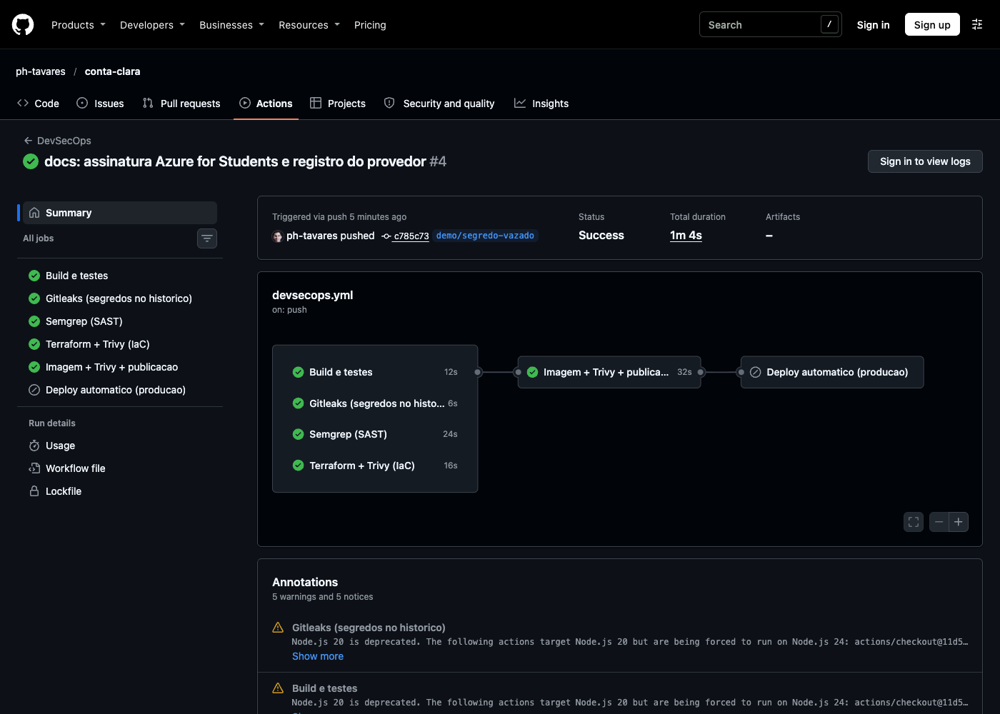
A API expõe /metrics (Prometheus) protegido por token Bearer. Prometheus, Grafana e Alertmanager rodam localmente e raspam o MVP publicado via HTTPS, como o enunciado permite. Os rótulos de rota usam o template da rota, o que evita cardinalidade alta. Além dos sinais de ouro, a API conta as conferências por resultado (contaclara_conferencias_total), base do indicador de impacto.
| Sinal de ouro | Métrica / PromQL |
|---|---|
| Latência | histogram_quantile(0.95, sum by (le) (rate(http_request_duration_seconds_bucket[5m]))) (p50/p95/p99) |
| Tráfego | sum by (route) (rate(http_requests_total[1m])) |
| Erros | (sum(rate(http_requests_total{status=~"5.."}[5m])) or vector(0)) / sum(rate(http_requests_total[5m])) |
| Saturação | process_resident_memory_bytes, rate(process_cpu_seconds_total[1m]) (o F1 tem cota de CPU), http_requests_in_progress |
| Alerta | Condição | Severidade |
|---|---|---|
| ContaClaraFora | up == 0 por 1 min | critical |
| TaxaDeErrosAlta | > 5% de respostas 5xx por 1 min | critical |
| LatenciaP95Alta | p95 > 1 s por 5 min | warning |
| SaturacaoMemoria | > 200 MB por 5 min | warning |
Disparo do alerta com uma falha real: PREENCHER: data e linha do tempo real (horário de Brasília) de: app parado com az webapp stop, raspagem falhando, ContaClaraFora em firing, notificação push recebida, app religado com az webapp start, alerta resolvido.
Entrega do alerta: o Alertmanager envia uma notificação push pelo ntfy.sh, sem conta nem servidor; o alerta chega no navegador ou no app do celular. A URL, com um tópico aleatório, fica em monitoring/secrets/ntfy_url, fora do Git. As mensagens levam só o nome do alerta, a severidade e o host público, nenhum dado pessoal. Não existe nenhum endpoint de "erro proposital" exposto em produção.
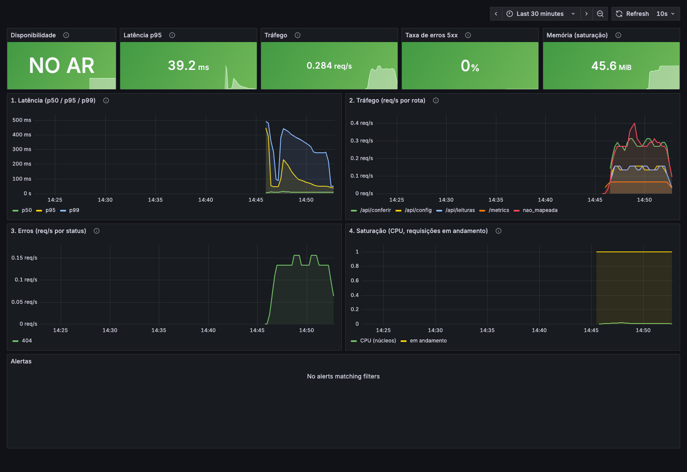
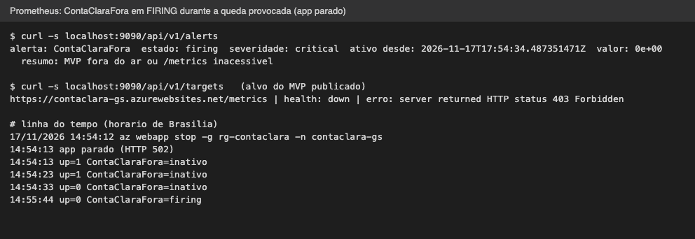
ContaClaraFora em firing no Prometheus durante a queda provocada (up = 0).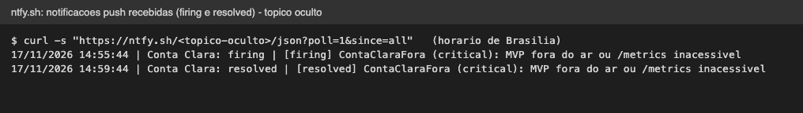
ContaClaraFora durante a queda e resolved depois que o app voltou.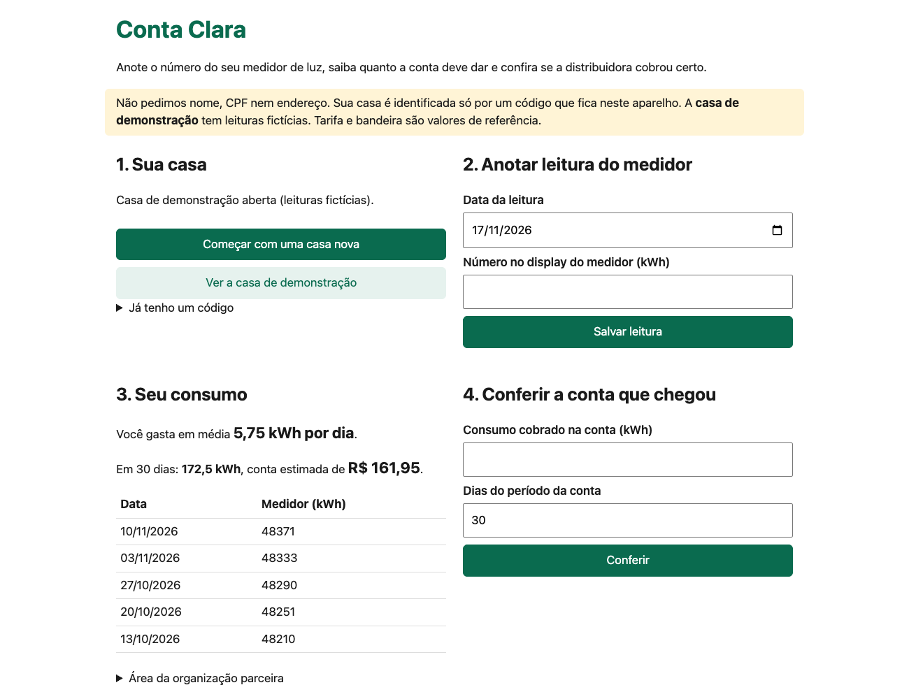
/#demonstracao): leituras anotadas, consumo médio por dia e conta estimada.| Camada | Microsoft Azure | Conta Clara |
|---|---|---|
| Física e virtualização | Datacenter, hardware, rede física, hipervisor, isolamento entre clientes | — |
| Rede e borda | Front-end do App Service, certificado TLS do *.azurewebsites.net, proteção básica contra DDoS | HTTPS obrigatório, TLS 1.2+, SCM só do IP do admin, FTP e publicação por senha desligados (Terraform) |
| SO e runtime do host | Patches do SO dos workers e do Docker do App Service | — |
| Container e dependências | — | Imagem base atualizada, CVEs (Trivy), usuário não-root, dependências fixadas |
| Aplicação | — | Código (testes, Semgrep), isolamento entre casas, token do painel, CSP, validação de entrada |
| Identidade e segredos | Entra ID, emissão dos tokens OIDC, RBAC | Identidade de deploy com menor privilégio, tokens gerados pelo Terraform, GitHub Secrets, rotação |
| Armazenamento | Durabilidade e criptografia em repouso do /home do App Service | Backup do arquivo SQLite (pendente, ver riscos) |
| Dados e LGPD | Região escolhida (brazilsouth) e certificações da plataforma | Minimização, pseudonimização, retenção e resposta a titulares (controladora) |
| Monitoramento | Saúde da plataforma | Métricas da aplicação, alertas e resposta a incidente |
| Dado | É pessoal? | Onde fica | Proteção |
|---|---|---|---|
| Nome, CPF, endereço, n. da instalação | Sim | Não são coletados | Minimização: o piloto não tem cadastro; a contestação traz campos em branco que a família preenche fora do sistema |
| Código da casa | Pseudônimo (dá acesso aos dados da casa) | Só no aparelho da família; o banco guarda o hash SHA-256 | 72 bits aleatórios; trafega no cabeçalho X-Codigo-Casa, nunca na URL (que vai para os logs HTTP); um vazamento do banco não dá acesso a nenhuma casa (testado) |
| Leituras e conferências | Revelam hábitos de consumo da casa | SQLite em /home/data/contaclara.db, armazenamento do App Service em brazilsouth | Ligadas só ao hash do código; uma casa não lê a outra (testado); o painel do parceiro mostra só contagens |
| Endereço IP do visitante | Sim | Logs HTTP do App Service (brazilsouth) | Retenção de 7 dias / 35 MB, só para diagnóstico; a API não grava IP nem corpo de requisição e as métricas não têm IP |
| Fotos do medidor | Podem mostrar a casa | Não existem neste MVP | No produto completo (Visão), a foto é descartada após a leitura e só o número é guardado |
| Segredos (tokens) | Não pessoais, mas sensíveis | App settings do App Service, state no HCP Terraform, GitHub Secrets | Nunca no Git (Gitleaks); acesso restrito por RBAC e por conta |
Em trânsito, tudo passa por HTTPS (TLS 1.2+, certificado gerenciado pela Azure). Em repouso, o armazenamento do App Service é criptografado pela plataforma. Os dados ficam no Brasil, na região brazilsouth. O state do Terraform guarda os tokens da aplicação, mas nenhum dado de cidadão.
Fonte: Azure Retail Prices API (preços públicos pay-as-you-go em USD, região brazilsouth), consultada em PREENCHER: data da consulta. O mês considerado tem 730 h.
| Recurso | Preço unitário | USD/mês |
|---|---|---|
| App Service Plan F1 (Linux) | US$ 0,00/h | 0,00 |
| Armazenamento do App Service (1 GB incluso no F1) | incluso | 0,00 |
| Entra ID (aplicação de deploy) | incluso | 0,00 |
| HCP Terraform (plano Free) | — | 0,00 |
| GitHub Actions e GHCR (repositório público) | — | 0,00 |
| Prometheus/Grafana/Alertmanager (local) | — | 0,00 |
| Total do piloto | 0,00 | |
| Próximo degrau: App Service Plan B1 (Linux), com Always On e sem cota diária de CPU | PREENCHER: US$/h do B1 | PREENCHER |
O piloto cabe inteiro em planos gratuitos. Para sair do piloto, o próximo passo é o B1 e, com mais de uma instância, um banco gerenciado no lugar do SQLite (não orçado aqui, porque não está disponível na assinatura Starter).
ContaClaraFora cobre esse caso.| Critério | Pts | Evidência |
|---|---|---|
| Dockerfile enxuto, não-root, sem segredo e docker compose | 2,0 | Seção 3.1, Fig. 1, app/Dockerfile, docker-compose.yml |
| Terraform, state/.tfvars fora do repo, admin nunca 0.0.0.0/0 | 3,0 | Seção 3.2, terraform test, Figs. 2–4, .gitignore |
| Actions: build, Gitleaks, Semgrep, Trivy por push; Secrets; deploy automático; barrada e corrigida | 4,0 | Seção 4, Figs. 5–9 |
| Dashboard com os 4 sinais de ouro e um alerta disparado | 3,0 | Seção 5, Figs. 10–12 |
| Arquitetura, responsabilidade compartilhada, LGPD, custo, README | 2,0 | Seções 2, 7, 8 e 9; README com Ficha Técnica |
O Conta Clara chega à família por um caminho em que nenhum passo é manual. A infraestrutura é descrita em Terraform e testada antes de existir. Cada alteração de código passa por testes e por quatro varreduras de segurança, e só a imagem aprovada é publicada e implantada, por uma identidade sem senha e com permissão mínima. Depois de publicado, o produto é observado pelos quatro sinais de ouro, com um alerta disparado por uma falha real. O desenho de dados segue a LGPD desde o início: nenhum dado de identificação é coletado, o código da casa só existe como hash no banco e o parceiro só vê agregados. O custo do piloto é zero, e os riscos que ainda existem estão listados com o próximo passo de cada um.